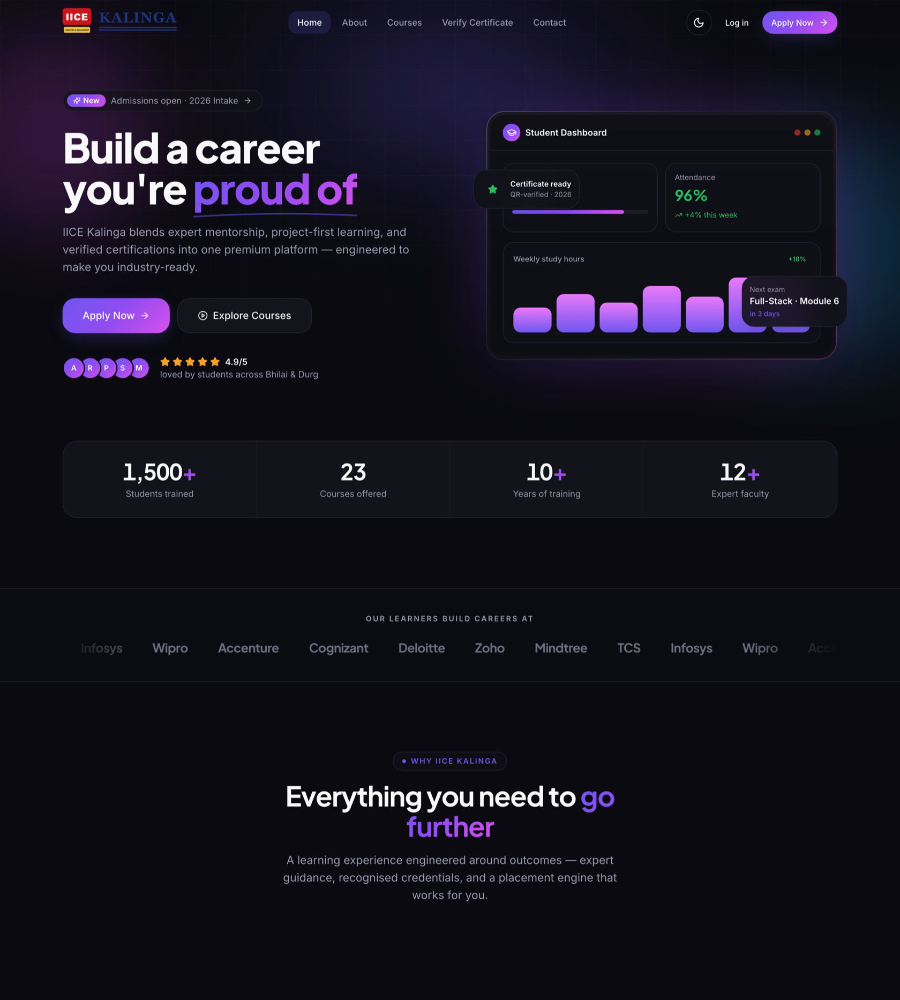
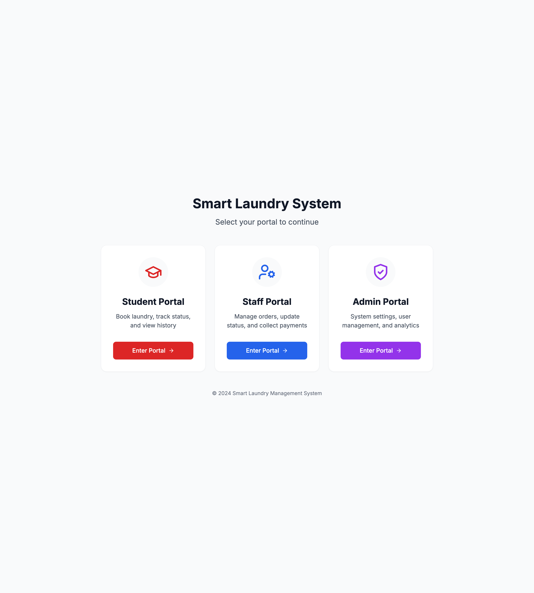
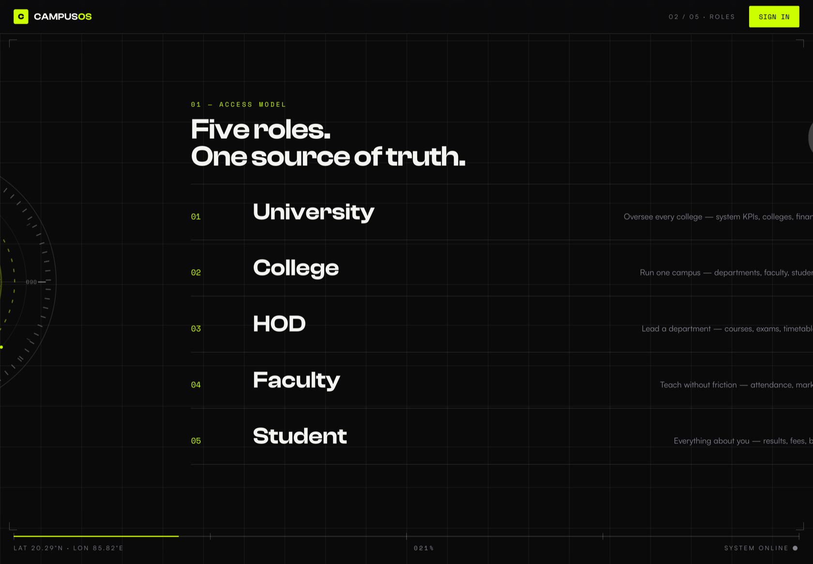
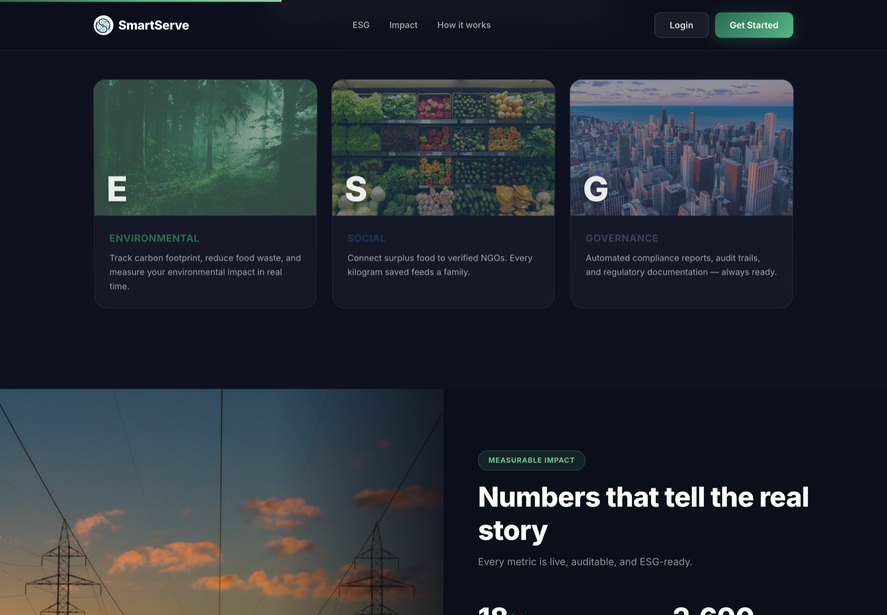
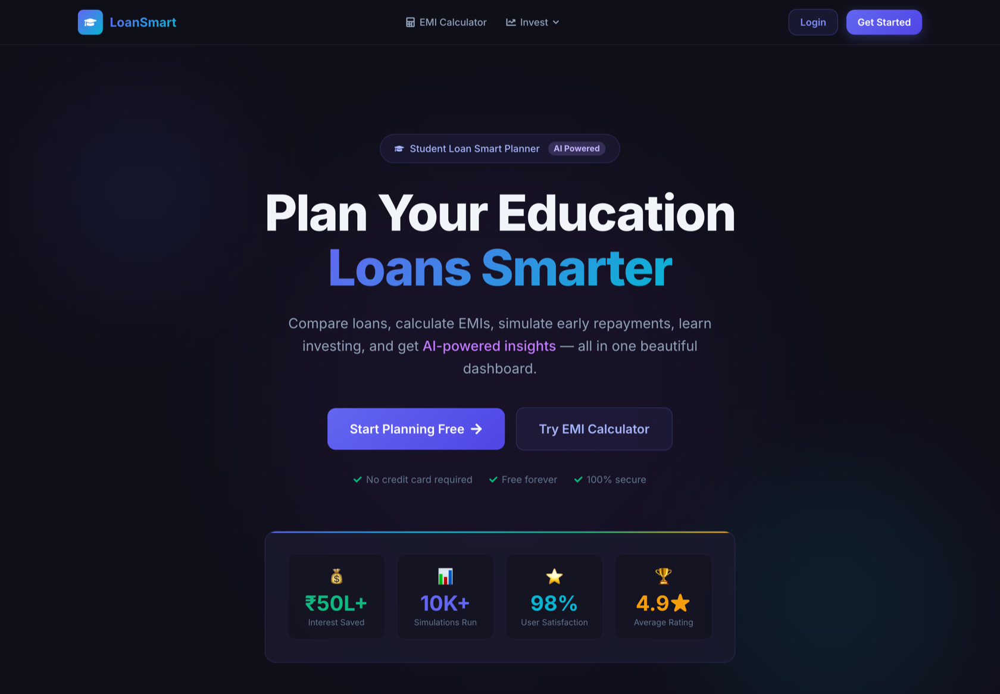
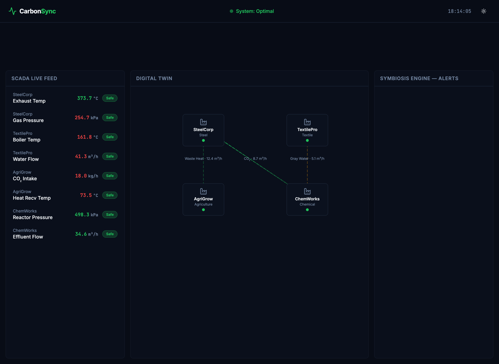
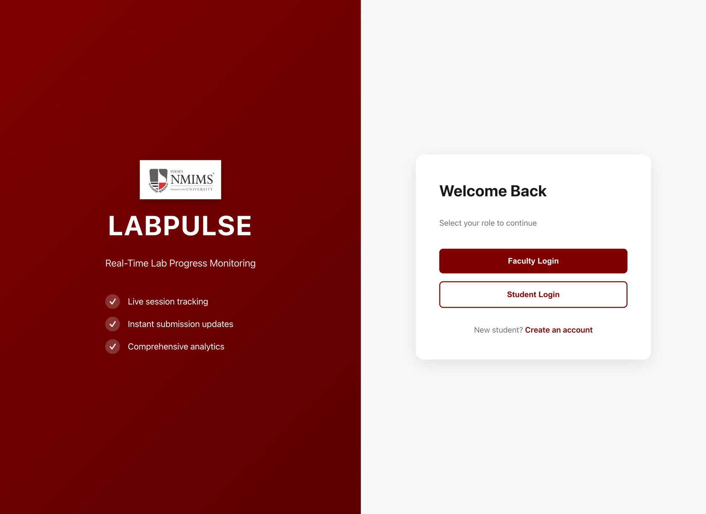

IICE Kalinga fuses ERP, LMS and CRM into one enterprise-grade product — with the polish of Stripe, Linear and Vercel.
The lead story of this edition is a full education ecosystem built for institutions that expect the software to feel as considered as the campus itself. IICE Kalinga is engineered on Next.js 15 and React 19, hand-tuned in TypeScript, and dressed in a bespoke design system with dual light and dark themes.
Phase one — the entire public marketing surface and design system — ships production-quality: fully responsive, motion-choreographed with Framer Motion, and passing a clean type-checked build with zero errors. Subsequent phases stage the database, role-based portals, payments and integrations.
Presented at right, live and unretouched, straight from the press.

A hostel laundry system that ends the pilgrimage to the machines — track, queue and get notified.
Smart Laundry replaces the physical check with a live status feed for university hostels. Students submit orders, watch their place in the queue, and review a full history without leaving their room.
Staff work a dedicated dashboard to advance order states; administrators oversee analytics, pricing and staffing. Login is password-free via OTP, and Twilio-backed SMS fires the moment a load is ready.

Software should read like a well-set page — considered, legible, and quietly confident.

A five-tier college ERP where role-based access is enforced on the backend and the frontend alike.
CampusOS models the real chain of authority: University → College → HOD → Faculty → Student. Every JWT carries role and scope, and every route is guarded and scope-filtered — no leaking data one tier up.
Students see only their own record: courses, attendance, PDF marksheets, fees and payment. Faculty take attendance and grade. The result is a data-dense dashboard with genuine, enforced permissions in light and dark.

An ESG platform routing surplus food from kitchens to the people who need it, with the reporting to prove it.
SmartServe turns kitchen surplus into measured impact across three fronts — environmental (carbon & food-waste tracking), social (connecting surplus food to verified NGOs), and governance (automated compliance reports and audit trails).
Built on Firebase with a containerised deployment, every metric is live, auditable and ESG-ready — a social-good story told in dashboards rather than slides.

A fintech planner that turns EMIs, comparisons and early repayment into visual, AI-assisted insight.
LoanSmart treats a loan like a product you can actually reason about. Real-time sliders drive an EMI calculator; a comparison engine weighs up to five loans and highlights the best; a repayment planner charts the interest saved and the months shaved off.
Behind the glass-morphism dark theme sits secure JWT access-and-refresh auth, AI-powered insights, and a dashboard of pie, bar and area charts — a production-minded fintech MVP.

A climate-tech control room where one factory’s waste becomes another’s feedstock — matched in real time.
CarbonSync reads a live SCADA feed of plant telemetry — exhaust temperature, gas pressure, effluent flow — and renders it as a digital twin of connected facilities. A symbiosis engine then spots exchanges: SteelCorp’s waste heat piped to AgriGrow, its CO₂ routed to ChemWorks.
Every reading is status-scored and safe-flagged in one typed, component-driven interface — carbon data turned into an operations dashboard rather than a spreadsheet.

Real-time lab progress monitoring: live session tracking, instant submission updates and comprehensive analytics.
Lab Pulse runs practical sessions at scale. Faculty watch progress live as students submit; WebRTC screen-sharing gives a real-time window into each station; a capacity engine manages seats and dead-seat recovery, and bulk import onboards whole cohorts in one pass.
Chart.js dashboards keep the session legible, and the platform was hardened with dedicated load-testing and Firebase security rules — built for exam day, not just the demo.
Full-stack web applications — ERP, fintech, ESG and campus platforms — designed and built end to end.
Enquiries to the address in the colophon below.
See the full press →